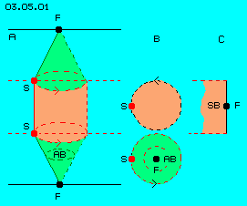
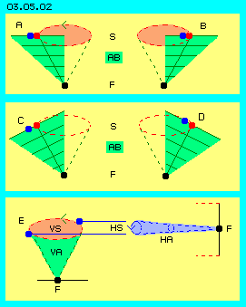
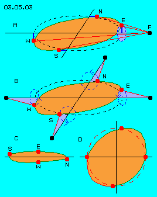
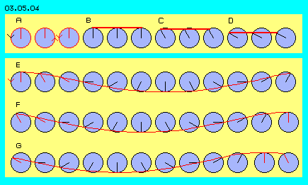
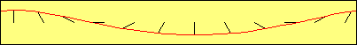
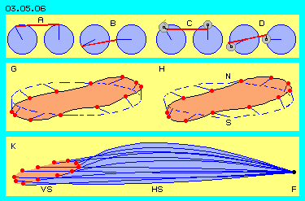
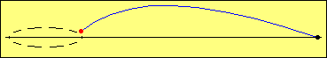

| Alfred Evert | 15.04.2004 |
03.05. Umlaufende Welle
Schwingende Flächen

Mittig dazwischen ist eine Ebene (bzw. ein Zylinder) eingezeichnet, in welcher der Äther kreisförmig schwingend ist. Die Differenz zwischen null Bewegung und diesem Schwingen (S) wird ermöglicht, wenn jeweils in Ausgleichsbereichen (AB) die Kreisbahnen sich kegelförmig verjüngen zum ruhenden freien Äther (F) hin.
In diesem Bild bei B ist ein Querschnitt (rot) dargestellt. Ein schwingender Ätherpunkt der mittleren Ebene schwingt auf dieser Kreisbahn. Darunter ist eine Draufsicht auf den Ausgleichsbereich (grün) dargestellt. Die Ätherpunkte dort schwingen nach unten hin auf Kreisbahnen mit immer kleinerem Radius.
Der ganze mittige Zylinder (rot) schwingt also relativ vehement. Im lückenlosen Äther müssen alle Nachbarn synchron mitschwingen und damit würden sich ein zu allen Seiten hin unbegrenzter Schwingbereich (SB) ergeben. Wenn aber diese Bewegung lokal begrenzt sein soll, am Rand also wieder Freier Äther (F) ´ruhend´ sein soll, muss rundum eine Begrenzung existieren (wie bei C schematisch markiert ist).
Zielsetzung dieses Kapitels ist zu ermitteln, welche Bewegungsform die lokale Ätherbewegung aufweisen muss, so dass sie rundum an ruhenden Äther angrenzt.
Kippen und Verschieben
Bei B ist die Situation nach einem Schwingen auf halber Kreisbahn dargestellt. Der beobachtete rote Ätherpunkt befindet sich nun ganz rechts, sein blauer Nachbar befindet sich weiterhin links davon. Am grün markierten Ausschnitt des Ausgleichsbereichs ist nun klar zu erkennen, dass die horizontalen Nachbarn immer in gleicher Position nebeneinander bleiben. Die Verbindungslinien sind aber gegeneinander versetzt, d.h. vertikale Nachbarn nehmen andere Positionen relativ zueinander ein.

Alle Nachbarn auf der Verbindungslinie zwischen Freiem Äther (F) und beobachtetem schwingenden Ätherpunkt (S) bewegen sich auf Bahnen, die insgesamt einen Kegel darstellen (gestichelt markiert). Hier sind nun die Nachbarn rechtwinklig zu dieser Linie als Verbindungslinien markiert. Die eingezeichnete Längen markieren den jeweiligen Durchmesser ihres Schwingens, von oben nach unten geringeren Ausmaßes.
Wenn alle Nachbarn dieses Kegels zueinander in unveränderter Position bleiben sollten, so würden diese Ätherpunkte während der Kreisbewegung eine Kippbewegung ausführen, wie hier bei D nach einer halben Drehung dargestellt ist. Dieses Bewegungsmuster ist also vergleichbar zu einem taumelnden Kreisel - nur dass der Äther hier keine Um-drehungen ausführt, sondern nur schwingt. Der blaue Ätherpunkt ist und bleibt stets der Nachbar zur linken Seite des beobachteten roten Ätherpunktes.
Die lokale Ätherbewegung verhält sich nicht exakt nach diesem einfachen Bewegungsmuster, diese Überlegung gibt aber einen entscheidenden Hinweis. Der blau gezeichnete Nachbar führt eine Kreisbewegung aus, durch die damit verbundene Kippbewegung befindet er sich zugleich auf unterschlichen Ebenen: links ist er unterhalb und rechts ist er oberhalb zu seinem roten Nachbarn.
Anheben und Senken
Neben obigem ersten Schwingen um die vertikale Achse (VS) mit ihrem vertikalen Ausgleichsbereich (VA) tritt nun also ein zweites Schwingen um eine horizontale Achse (HS). Dieses zusätzliche Schwingen kann nun in einem horizontalen Ausgleichsbereich (HA) wiederum kegelförmig zur Seite hin verjüngt sein - bis hin zum Freien Äther (F).
Erst durch diese beiden Schwingbewegungen um rechtwinklig zueinander stehende Achsen kann also eine im Zentrum großräumige Bewegung zum seitlichen Rand hin lokal begrenzt sein. Wiederum sind also im Äther (mindestens) zwei Bewegungen zugleich gegeben, bei der Universellen Ätherbewegung wie hier bei der lokal begrenzten.
Ungleichförmige Bahn

Bei B ist die jeweilige Verbindungslinie zwischen Freiem Äther und schwingendem Ätherpunkt in den vier Positionen dargestellt. Durch blaues Dreieck ist gekennzeichnet, in welcher Position sie sich innerhalb des horizontalen Ausgleichsbereich momentan befindet.
Durch gestrichelte Kreise ist das jeweilige Schwingen um die Achsen dargestellt, durch Pfeile ist die jeweilige Richtung markiert. Von außen gesehen schwingen alle Verbindungslinien gegen den Uhrzeigersinn. Wenn allgemein im Universum die Linksdrehung als dominant betrachtet wird, so bewegt sich Äther am Umfang eines lokalen ´Ätherwirbels´ synchron dazu. Wie dieses Unmögliche möglich sein soll wird unten dargestellt.
Hier soll zuerst aber auf eine andere Besonderheit hingewiesen werden, auf die unterschiedlich langen Wege. Wenn der Ätherpunkt aus seiner Position im Osten (E) zur Position im Süden (S) sich bewegt, hat er von oberhalb der Ost-Achse einen relativ langen Weg nach links zur Süd-Achse zu gehen. Von dort nach unterhalb der West-Achse ist der Weg kürzer, von West nach Nord wieder länger und von Nord nach Ost wiederum kürzer. Das Schwingen um diese Achsen kann also entweder nicht mit konstanter Geschwindigkeit erfolgen oder die Bahn des Ätherpunktes kann keine reiner Kreisbahn sein.
Bei C ist ein Schnitt durch die ´Bewegungsscheibe´ dargestellt. Bei Ost (E) befindet sich der Ätherpunkt oberhalb der Achse, bei West unterhalb, bei Süd und Nord könnte er sich dann nicht exakt auf Höhe der Achsen befinden. Die Bahn wäre also wie der Rand eines Hutes, der auf einer Seite hoch und gegenüber etwas abwärts gebogen ist.
Bei D ist schematisch dargestellt, dass der Ätherpunkt die langen Distanzen auf Wegen weiter innen gehen, bei kurzen Distanzen aber einen längeren Umweg durchlaufen könnte. Die Bahn wäre damit keine reine Ellipse, wohl aber ein abgeplatteter bzw. ausgeweiteter Kreis. Die reale Bahnen lokaler Ätherbewegung werden ein Kompromiss sein, in Form diverser spiraliger Bahnen.

Bei A sind drei linksdrehende Rädchen eingezeichnet, wobei zwischen den Rädern gegenläufige Bewegungen existieren (siehe Pfeile). Es würde also wiederum Reibung im Äther gegeben sein. Dieser Art Drehung kann im lückenlosen Äther nicht statt finden.
Im Ätherkontinuum kann immer nur relativ synchrones Schwingen statt finden. Am Beispiel dieser Räder ist das bei B, C und D verdeutlicht. Wiederum drei Räder sind durch eine Stange miteinander verbunden (z.B. so wie drei Antriebsräder einer Dampflokomotive). Alle Räder drehen gleichsinnig (hier z.B. aus der 12-Uhr- zur 11-Uhr und 10-Uhr-Position), so dass alle Punkte auf dieser Verbindungslinie parallel zueinander schwingen).
In diesem Bild bei E sind nun zwölf solcher Rädchen dargestellt, anstatt voriger starrer Verbindungsstange ist nun aber eine gewundene Verbindungslinie benachbarter Ätherpunkte eingezeichnet. An den ´Rädchen´ ist diese Verbindungslinie an jeweils anderer Stelle ´befestigt´.
Alle Rädchen können nun synchron drehen - und die Verbindungslinie wird eine von rechts nach links wandernde Wellenbewegung ergeben, wie die kleine Animation anschaulich zeigt.
Darüber hinaus wird damit nochmals der wesentliche Unterschied von Um-Drehung und Schwingen verdeutlicht: das Drehen um eine Achse ist im materiellen Bereich üblich, das Schwingen um eine Achse (bzw. in der Regel um mehrere Achsen zugleich) ist ausschließliche Bewegungsmöglichkeit im Äther selbst.

Überlagerte Drehungen
In Bild 03.05.06 sind nochmals ´Räder´ (blau) und starre Verbindungen (rot) dargestellt. Die Verbindungslinie A zwischen 12-Uhr und 11-Uhr-Position ist wesentlich länger als z.B. die Verbindungslinie B zwischen 9-Uhr- und 8-Uhr-Position. Im lückenlosen Äther kann so kein Bewegungsablauf statt finden.
Im früheren Kapitel Überlagerungen wurden Bewegungsabläufe bei Meereswellen diskutiert und z.B. in Bild 03.02.03 (bei B, C und D) der Bahnverlauf bei Überlagerung von zwei Kreisbewegungen dargestellt.
Hier in Bild 03.05.06 bei C und D findet z.B. um den bisherigen ´Befestigungspunkt am Rad´ eine weitere Drehung (grau) mit relativ kurzem Hebelarm statt. Dieser zweite Drehpunkt wandert also auf einer Kreisbahn im Raum und um diesen Drehpunkt erfolgt die zweite Drehung wiederum synchron. Damit sind Verbindungslinien von durchgängig gleicher Länge möglich, beispielsweise wie bei C und D dargestellt.

Anstatt der bislang zweidimensionalen Abbildung sind hier in Bild 03.05.06 bei G vorige ´Uhrzeiger´ (blau) nun im Kreis (blau gestrichelt) herum eingezeichnet. Es ergibt sich daraus die umlaufende Welle (schwarz) mit ihrer ungleichförmigen Bahn bzw. die ´schiefe´ Scheibe (rot) des Bewegungszentrums.
Bei H ist das Ergebnis obiger Überlagerungen schematisch dargestellt. Die ´Uhr´ bleibt phasenweise etwas zurück, so dass z.B. im Süden (S) noch nicht die 9-Uhr- und im Norden noch nicht die 3-Uhr-Position erreicht sind (bei dieser Drehung gegen den Uhrzeigersinn). In den Phasen dazwischen holt die Uhr den Rückstand auf, so dass insgesamt gleich lange Bahnabschnitte resultieren.
Eine weitere Möglichkeit zum Ausgleich voriger Differenzen von Verbindungslinien ist hier ebenfalls eingezeichnet. Die ´Uhrzeiger´ müssen keinesfalls immer senkrecht auf diesem Kreis stehen, sondern können nach innen oder außen geneigt sein. Das umlaufende Band ist hier beispielsweise oben etwas nach links geneigt. Selbst diese Neigung kann während des Umlaufs variieren (und wird real sich fortlaufend ändern, außerdem wird die Neigung viel stärker sein als hier gezeichnet ist).
Schwingende Verbindungslinie
Die Verbindungslinien (blau) zwischen einem beobachten Ätherpunkts des Zentrums und einem Punkt (schwarz) Freien Äthers (F) kann keine gerade starre Linie sein (wie bei obigen Kegeln vereinfachend unterstellt wurde). Ähnliche Bewegungen werden vielmehr die benachbarten Ätherpunkte auf spiralig gekrümmten Verbindungslinien aufweisen.
In diesem Bild bei K sind als Bündel veränderte Formen dieser Verbindungslinie dargestellt, wie sie sich beim Umlauf eines zentralen Ätherpunktes auf voriger schiefen Bahn ergeben könnten (bzw. im Prinzip so ergeben müssen). Alle Punkte auf dieser Verbindungslinie führen ähnliche Bewegungen aus, schwingen also jeweils nicht nur um ihre horizontale Achse, sondern bewegen sich zugleich nach links bzw. rechts. Es ist also keinesfalls Bewegung nur im Zentrum gegeben, sondern rundum in ganz erheblichem Umfang. Nach außen hin zum Freien Äther werden die Wege allerdings kürzer, somit die Schwingung gedämpft.

Symmetrie und Unsymmetrie
Die Verbindungslinien quer zur X-Achse (also entlang der Z-Achse) müssen anders geformt sein und verformt werden. Aus dieser Sicht ist z.B. die kürzeste und längste Distanz zum beobachteten Ätherpunkt nicht bei dessen Position weit oberhalb bzw. unterhalb der axialen Ebene, sondern seitlich von der Z-Achse gegeben.
In der Ebene dieses Achsenkreuzes existiert also rund um das Bewegungszentrum ein horizontaler Ausgleichsbereich bis hin zum Freien Äther. In diesem Bereich werden allerdings die ausgleichenden Bewegungen nicht gleichförmig sein. Nur jeweils exakt gegenüber sind die Bewegungen spiegelbildlich analog. Diagonal zu vorigen X- und Z-Achsen existieren fließende Übergänge der beiden Bewegungsmuster.
Die Bewegungsbahn im Zentrum liegt schräg zur äquatorialen Ebene dieses Achsenkreuzes, woraus sich bereits Asymmetrie des Bündels von Bewegungslinien in obigem Bild bei K ergibt. Es muss natürlich auch eine Verbindungslinie hin zu Freiem Äther in der Sicht direkt auf die Ebene des Bewegungszentrums geben, also zu einem Punkt Freien Äthers etwas oberhalb der vorigen Animation. Diese Verbindungslinie wird wiederum andere Form und anderes Verhalten aufweisen.
Es sind im Freien Äther in jeder Richtung solche Verbindungslinien zu denken, also auch z.B. in der ganzen Halbkugel über diesem Achsenkreuz. In diesem Bereich wurden bislang nur kegelförmige, vertikale Ausgleichsbereiche mit gerader Verbindungslinie gezeichnet (z.B. wie in den ersten beiden Bildern dieses Kapitels). Ähnliche Bewegungen finden aber nicht in gerader Linie statt, sondern immer nur von Nachbarn auf spiraligen Linien.
Im folgenden Kapitel Taumelnde Achse werden die Bewegungsmuster entlang dieser Y-Achse diskutiert und nochmals dargestellt, warum sich Verbindungslinien in welcher prinzipiellen Weise winden und krümmen (müssen).
Im vorigen Kapitel wurde dargestellt, dass der Äther mittig in einer lokalen Ätherbewegung sich wie eine schwingende Scheibe verhält. Auch schon im früheren Kapitel wurden kreisende Bewegung beschreiben, z.B. in Bild 03.03.02. bewegten sich verschiedene Ebenen relativ zueinander.
In Bild 03.05.02 ist nur der Kegel des unteren Ausgleichsbereichs dargestellt. Bei A befindet sich der beobachtete Ätherpunkt (rot) auf seiner Kreisbahn ganz links. Ein benachbarter Ätherpunkt (blau) dieser schwingenden Ebene (S) ist links davon eingezeichnet. Weitere Nachbarn sind durch schwarze, horizontale Verbindungslinien schematisch markiert, auch weiter unten im Ausgleichsbereich (AB) bis hin zur Ebene Freien Äthers (F).
In diesem Bild bei E ist die Differenz der Höhen (relativ zur Ebene Freien Äthers) hervorgehoben. Während der taumelnden Kippbewegung wird der blaue Ätherpunkt angehoben und abgesenkt. Wiederum kann das im lückenlosen Äther keine lineare Bewegung sein, sondern kann (und wird) nur durch kontinuierliches Kreisen bzw. Schwingen statt finden. Das Anheben und Absenken vollzieht sich also während einer Schwingung um eine horizontale Achse.
In Bild 03.05.03 ist dieses gemeinsame Schwingen dargestellt. Die ursprüngliche Schwingbewegung in der Ebene ist rot markiert, zur Orientierung ist ein Achsenkreuz eingezeichnet. Das Schwingen rechtwinklig dazu ist blau markiert. Freier Äther (F) ist durch schwarze Punkte gekennzeichnet. Der beobachtete Ätherpunkt ist rot gezeichnet, seine unterschiedlichen Positionen während seiner Bewegung sind nach den Himmelsrichtungen gekennzeichnet.
In vorigen Bildern wurde dieses Schwingen um horizontale Achse als blaue Rädchen symbolisiert. Deren Drehsinn wurde als links unterstellt und dass die Drehung in allen vier Himmelsrichtungen (bzw. nach allen Seiten hin) gleichsinnig sei. In Bild 03.05.04 ist das damit verbundene Problem schematisch dargestellt.
Oben im Abschnitt ´Ungleichförmige Bahn´ bei Bild 03.05.03 wurde angesprochen, dass die Bahnabschnitte ungleiche Länge aufweisen. Von Ost nach Süd und von West nach Nord sind die Wege länger als von Süd nach West bzw. von Nord nach Ost. Bei vorigen zwölf ´Rädchen´ bzw. der Welle voriger Animation mit den gekrümmten Verbindungslinien tritt das nicht mehr so deutlich zutage, dennoch sind diese Differenzen gegeben.
Die in vorigem Bild 03.05.04 dargestellten zwölf Rädchen bzw. die in voriger Animation dargestellten ´Uhrzeiger´ sind eigentlich rund um das Zentrum der schwingenden Ebene angeordnet. Vorige Welle läuft um dieses Bewegungszentrum rundum herum, als Schwingung um die horizontale Achse (HS) und als notwendige Ergänzung der ursprünglichen Schwingung um die vertikale Achse (VS).
In diesem Bild bei K ist eine schiefe, ungleichförmige Bahn nochmals dargestellt. Im Zentrum dieser lokalen Bewegung (rot) kann es keine reine Kreisbahnen geben, auch nicht rein elliptische Bahnen. Es werden sich mindestens eine Schwingung um eine vertikale Achse (VS) und (phasenversetzte) Schwingungen um (viele) horizontale Achsen (HS) überschneiden.
Es ist zu erkennen, dass dabei keinesfalls vollkommene Symmetrie gegeben sein kann. Symmetrisch hierzu ist nur die Bewegung der Verbindungslinie zu einem Punkt Freien Äthers, der sich auf der eingezeichneten (X-)Achse entsprechend weit links befindet.
03.06. Taumelnde Achse
Äther-Physik und -Philosophie